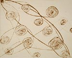

|  | |
|
Louise Bourgeois Prints: 1989-1998
December 5, 1999 - February 13, 2000
U.
S. Bank Gallery
Organized by the Maier Museum of Art, Randolph-Macon Woman's College
The exhibition features approximately fifty of Louise Bourgeois' powerful and evocative prints and artist's books made during the last decade. It surveys her preferred themes of animals, geometric forms and women.